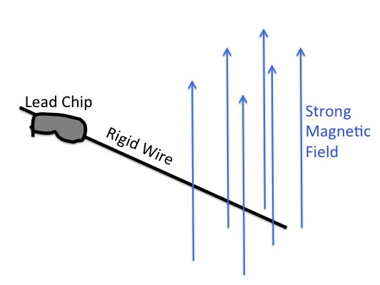
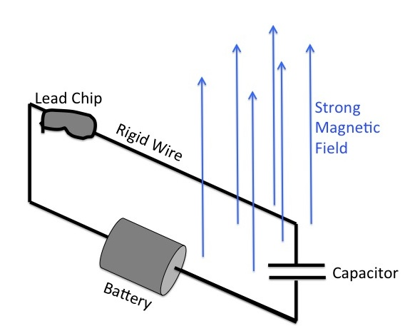

While I spend a lot of my time these days trying to figure out how Saturn's rings work and what they can tell us about the Saturn system, I used to work on very sensitive telescopes designed to measure the faint afterglow of the Big Bang. I was always impressed with how these instruments and experiments could measure signals millions of times fainter than various background signals in the instrument and the sky, and so I began to think about just how small a signal these sorts of instruments could detect. In particular, I wondered if the techniques and technologies currently being used to study the details of ancient light could be applied to another relic from the early universe: cosmic neutrinos.
Wait, what the $&?% are neutrinos?
Neutrinos are a type of sub-atomic particle, like electrons or quarks. Unlike other fundamental particles, neutrinos have no electric charge and very low masses. Since they have no charge, they interact very weakly with other matter, making them tricky to detect.
Okay, what the $&?% are cosmic neutrinos?
As their name implies, cosmic neutrinos (also called cosmological neutrinos, or the cosmic neutrino background) are neutrinos that come have a cosmological origin. That is, they come from a time shortly after the Big Bang. At this time the universe was very hot and dense, and protons, neutrons and electrons throughout the universe were undergoing constant nuclear reactions. Some of these reactions produced or absorbed neutrinos, so neutrinos also existed in this superheated plasma.
However, as the universe expanded, the interactions between the very sub-atomic particles became less frequent and also less violent, so the neutrinos stopped being produced and the ones around became less and less likely to interact with anything, and just a few seconds after the Big Bang, the neutrinos stopped interacting with anything else in the early universe, and so started flying free through the universe. Over the last 13 billion years, as the universe has continued to expand, these neutrinos have continued to disperse and lose energy. Still, even today there should be around about 150 cosmic neutrinos and 150 cosmic anti-nuetrinos in every cubic centimeter of the universe, on average. However, thus far nobody has directly detected these particles.
Wait, if nobody has seen them yet, how do you know they even exist?
For one, the same nuclear reactions that should have generated the neutrinos also were responsible for producing the initial mix of chemical elements in the universe, which are well constrained. Also, the relevant nuclear reactions can be studied in great detail in modern laboratories, so the theory of cosmic neutrino production is pretty robust. Furthermore, it turns out that the aggregate energy of these neutrinos has subtle but detectable affects on the faint light from the early universe that have been observed with recent experiments. All of these data are consistent with the above estimate of about 150 neutrinos and 150 anti-neutrinos per cubic centimeter.
Still, that's a lot of particles. Why hasn't anyone detected them yet?
Because it is really, really hard. In fact, many physicists probably think that detecting cosmic neutrinos is practically impossible.
Having no electric charge, neutrinos can only interact with matter by the "weak force". As its name implies, the weak force is typically much weaker than the more familiar electromagnetic forces responsible for holding electrons around atoms, which means cosmic neutrinos barely interact at all with other forms of matter.
To get a sense of how little neutrinos interact with things, imagine we took a single electron and put it in a box that kept out photons, protons and all the other particles zipping through the universe. However, this electron would still be exposed to a sea of cosmic neutrinos, and collisions between the electron and the neutrinos would eventually cause the electron to move in the box. Furthermore, the equations of quantum physics allow us to calculate how often these collisions are likely to happen, and the number is insanely low; the electron will collide with a neutrino on average once every 1045 years. This is orders of magnitude longer than the age of the universe, so the chances of observing any given electron reacting to the cosmic neutrinos is very unlikely.
Well, couldn't you just look at a lot of electrons?
Indeed you could, but even this turns out to be impractical. Their are about 1024 electrons in every gram of solid matter, given or take, which at first sounds like a lot, but its not enough to make the neutrino interactions detectable. The Earth contains over 1024 kilograms of stuff, so if we could observe all the electrons in the whole planet, only one electron would interact with a cosmic neutrino every second. Trying to find one reaction in the entire Earth is clearly an impractical way to look for neutrinos.
So detecting neutrinos is completely hopeless then?
Not quite, thanks to a phenomenon known as "coherent scattering''. Remember that subatomic particles like neutrinos live in a quantum world, where objects sometime act like particles and sometimes like waves. In fact, cosmic neutrinos act much more like waves than particles in most situations.
Consider again a single electron in the path of a cosmic-neutrino wave. The electron acts as an obstruction to the incoming wave and scatters a small piece of the neutrino-wave in various directions. This scattered bit of the neutrino wave corresponds to the probability that the neutrino was scattered in various directions.
Now imagine instead we had two neutrinos close together instead of one. In this case, there are two obstructions, and so two sets of scattered waves. In this case, the two scattered waves can interfere with each other and the unscattered part of the neutrino wave, altering the probability that the neutrino gets scattered in different directions.
It turns out that if the two electrons are separated by a distance that is much smaller than the effective wavelength of the neutrino, then the probability of the neutrino interacting with the two neutrinos is not just twice the probability of the neutrino interacting with each neutrino alone. Instead, the probability of the neutrino scattering off of two electrons is four times larger. More generally, if you have N particles (electrons, protons, whatever), packed into a region whose width is much smaller than the cosmic-neutrino's wavelength, then the interaction rate is proportional to N2.
Really? That doesn't sound right
It is certainly counter-intuitive, but it is actually a fairly common phenomenon in wave scattering problems, and can be easily demonstrated with light waves. Hence, unless the quantum mechanics of neutrinos is very different from that of any other elementary particle, it should happen with neutrinos as well.
Hmmm, well, carry on then.
Thanks. Coherent scattering can amplify the interaction rates for cosmic neutrinos by huge amounts because the wavelengths of cosmic neutrinos are about 1 cm.
Imagine that instead of an electron, we had a cubic millimeter of some dense metal like lead. There are of order 1024 protons, neutrons and electrons within such a chip of lead, and the cosmic neutrinos should scatter coherently off of every one. The interaction rate for this bit of lead would therefore be 1048 times higher than the interaction rate for a single electron or proton. This means that a cosmic neutrino would bounce off the lead chip once every few hours on average.
That sounds pretty good!
Indeed it does. In fact, back in the 1980's a number of physicists thought that they might be able to use relatively high rates associated with coherent scattering to build practical neutrino detectors. However, there is another problem: Cosmic neutrinos don't just interact rarely with matter, they also don't do much when they actually do run into something.When each cosmic neutrino bounces off our little bit of lead, the lead chip starts to move a little bit. However, the recoil motion of the lead chip due to a single neutrino is extremely tiny. This doesn't have anything to do with the neutrinos being weakly interacting particles, but simply reflects the fact that each cosmic neutrino has very little momentum that can be transferred to the lead particle in a collision. Even if we could arrange it such that each cosmic neutrino kicked the chip in the same direction, these tiny kicks still yield very little movement. In fact, it would take over a thousand years for the chip to move the width of a single Hydrogen atom.
It is this combination of rare interactions and tiny responses that has led many people to think cosmic neutrinos are practically undetectable.
And you think different?
Yep
So you think all those earlier scientists were wrong?
Nope, I agree that the momentum carried by neutrinos is nigh-undetectable. However, neutrinos don't just have momentum that can make things move, they also have kinetic energy, which can not only cause things to move, but also can be converted into other forms of energy like heat, electrical energy, or whatever. If we could somehow arrange it so that when a neutrino struck our bit of lead, it lost a substantial fraction of its kinetic energy into a bit of lab equipment, then the cosmic neutrinos striking the lead chunk would be donating about 10-27 Watts of power to our lab equipment.
Wait, 0.000,000,000,000,000,000,000,000,001 Watts, you think that is detectable?
While this energy flux sounds mind-boggling small, it could actually be detectable with modern (or maybe near-future) technology. People have made devices called bolometers (essentially extremely sensitive thermometers) that can detect energy fluxes as small as 10-19 Watts with only a second of observation time. Annoyingly, the minimum detectable signal scales with the square root of the observation time, so we would need 10 million of these thermometers running for a full year to detect the tiny energy flux from the neutrinos. However, if we imagine 10 million little milllimeter-sized chunks of lead with 10 million similarly-sized bolometers attached to them, them we would still have an instrument that could fit into a volume a few meters wide by a few meters long by a few meters tall. This instrument would therefore be big and complex, but might at least be build-able.
Okay, maybe. But for this idea to work, you need each neutrino that hits one of those chips of lead to lose most of its kinetic energy. How do you do that?
That is the trick. Clearly you need something a bit more complicated than an isolated lead chip to accomplish this. Indeed, if you do consider an isolated lead chip, then conservation of energy and momentum pretty much requires that the neutrino donates only a tiny fraction of its kinetic energy when it collides.
But what if we instead imagine a more complex contraption like this:

Here the lead chip is attached to a wire in a magnetic field, when the lead chip moves, the wire gets dragged across the field, which pushes all the electrons to one end of the wire. This means that after the neutrino knocks the lead chip, the lead chip is not only moving very slowly, but there is a slight crowding of electrons near one end of the wire. Since like charges repel, some additional energy needed to be removed from the neutrino to put the electrons in this configuration. In fact, the change in the electron distribution due to the extremely slow motion of the wire involves orders of magnitude more energy than is needed to make the wire and lead chip move.
Now consider a slightly more elaborate version of this system:

Here a battery is attached to the wire, which pushes electrons towards one end of the wire even when the chip is not moving. This further increases the energy change associated with the wire's motion through the magnetic field. The two ends of the wire are also joined by a capacitor, which is just a way to control and define the "ends" of the wire. It turns out that with the right magnetic field strength, wire length, battery voltage, and capacitor properties, you can make a system that can absorb most of the energy from a cosmic neutrino collision.
Let me guess, you need ridiculously high magnetic fields or voltages to make this work.
Surprisingly, no. Magnetic fields of about a Tesla and voltages around a few tens or hundreds of Volts are all you need. So building these things might be feasible, and if we could make 10 million of them, maybe we could have something that could extract a detectable amount of energy from cosmic neutrinos.
But wait, how do you know that energy comes from cosmic neutrinos, and not something else?
That is still the problem. The best way to determine if a weak signal is from a particular source is to turn that source on and off. When looking at light, for example, it is often useful to difference between two sources to discern faint signals. However, it is not at all obvious how to turn cosmic neutrinos on and off. I don't think we can block them from reaching the lead chips, for example. Maybe someone else out there will have a clever idea how to distinguish the cosmic neutrino signal from other potential backgrounds.
More details on the physics behind this pseudo-socratic dialog can be found in my paper "Efficiently Extracting Energy from Cosmological Neutrinos" which can be found here and here